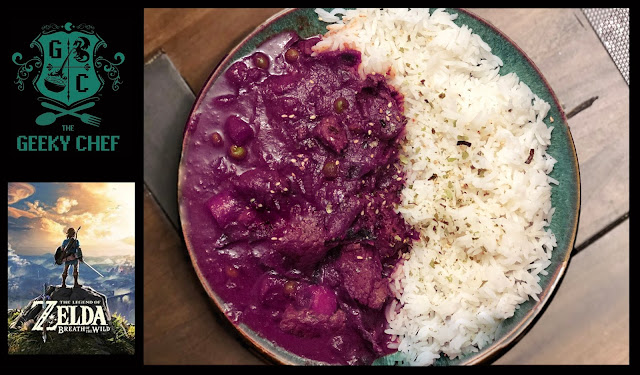

Monster curry

Description
The moment has arrived. Actually, it arrived several months ago. Okay, more than half a year ago, but who's counting? In any case, Breath of the Wild is here and it's magnificent. I usually beat Zelda games in about a week or two, but I'm taking my time with Breath of the Wild. And not just because I'm a mom now and have literally no free time anymore, but because the game is just that huge and rich. Also, the cooking aspect is like my wildest dreams come true. It's literally a jackpot of potential recipes. It's so overwhelming, in fact, that I couldn't single out a recipe I'd like to tackle. So, I handed that responsibility over to you, dear readers, and you chose, to my absolute delight... Monster Curry! Monster curry is made by combining Hylian Rice, Goron Spice and Monster Extract. The Monster Extract, obtained from the Fang and Bone after having met Kilton, is what gives it that beautiful purple color. For this dish I modified my own Japanese curry recipe that I use on a regular basis with my own "Goron Spice" blend. The result is a slightly sweet, mild curry with a ton of flavor and a beautiful purple hue.
Ingredients
- 4 Red Beets, peeled and boiled until soft (don't worry, you won't taste them)
- 4-6 Garlic Cloves
- Thin slice of peeled Ginger
- 1 Serrano Pepper, chopped
- 1 tbsp Olive Oil
- 2 lbs Stew Beef, tenderized and cut into bite-sized pieces (Optional)
- 2 medium Yellow Onions, peeled and chopped
- 1 Whole Star Anise
- 1 Cinnamon Stick
- 1/2lb Purple Potatoes, peeled and cubed
- 1/2lb Purple or Rainbow Carrots, peeled and sliced into rounds
- 2 cups Purple Cabbage, chopped
- 6 tbs Unsalted Butter
- 3.5 tbs All-Purpose Flour
- 1 cup Chicken Stock
- 3/4 cups Coconut Milk
- 3 tsp Sweet Curry Powder
- 1 tsp Garam Masala
- 1 tsp Ground Coriander
- 1 tsp Ground Cumin
- 1 cup of Frozen Peas
- Purple Gel Food Dye for additional color (optional)
- Steamed Jasmine Rice (for Serving)
- Furikake and/or chopped chives (for garnish, optional)
Steps
- First, we'll make the "Monster Extract." Add the beets, garlic, ginger and serrano pepper into a blender, puree until smooth and set aside.
- Heat the olive oil over high heat in a dutch oven or deep pot. Brown the beef in the oil, then set aside. You may need to do this in batches depending on the size of your cooking vessel. If you are making a vegetarian curry, skip this step.
- Add the onion, cinnamon stick, star anise, plus a tablespoon of chicken stock. Deglaze the pot and sauté for about 5 minutes or until translucent.
- Add 2 tbs of the butter, plus the carrots, cabbage and potatoes and saute for another 10-15 minutes or until the vegetables are softened but not mushy. Set the onions and vegetables aside so that the pot is empty.
- Add the other 4 tablespoons of butter and heat until melted. Slowly sprinkle in the flour and stir continuously until a thick paste forms and turns a light tan. Whisk in the chicken stock until thoroughly blended in, then whisk in the coconut milk.
- Add all the vegetables back into the sauce, along with the beef, spices and half of the Monster Extract and bring to a boil. Set the other half of the monster extract aside to add later.
- Reduce the heat to its lowest setting and simmer for 45 minutes to one hour, or until the potatoes and beef are cooked through.
- You'll notice the curry has become more brown than purple so add the remaining "monster extract" along with the frozen peas and cook for another couple minutes. You can also add gel food coloring if you want to get the color really vivid.
- Serve on a plate next to the jasmine rice and garnish with furikake and/or chives.
Main page